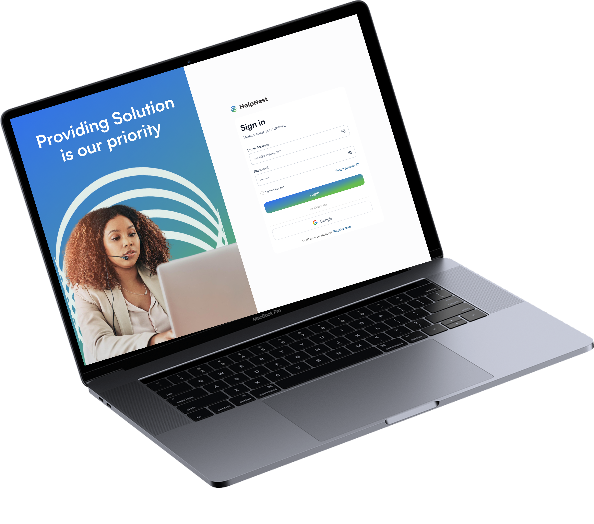

HelpNest
HelpNest is an AI powered customer support solution that helps businesses answer customer questions instantly and connect users with human support when they need additional help.

HelpNest is an AI powered customer support solution designed to help businesses handle customer questions more efficiently.
The AI assistant can be integrated into different digital products, allowing users to get help directly within the product they are using. It uses product specific information from the knowledge base to answer common questions and provide relevant support.
When the AI cannot resolve an issue, the conversation can be escalated to a human agent who can continue the conversation and assist the customer.
Behind the chatbot is a support platform that gives teams a central place to manage customer conversations, knowledge, agents, and support activity.

As PenCentral grew, the number of customer support requests also increased. Customer representatives were handling a high volume of questions, and response times were sometimes slow.
Customers often had to wait for answers to questions that could have been resolved quickly, while support representatives spent time responding to repetitive questions.
This created several challenges:
- Customers had to wait for support with simple questions.
- Customer representatives were spending time answering repetitive requests.
- High volumes of support requests made it harder to respond quickly.
- Customers could become frustrated when they did not receive help on time.
- The business risked losing customers because of poor support experiences.
The goal was to create a support experience that could give customers immediate answers to common questions while reducing the pressure on customer representatives.
The solution needed to:
- Help customers get answers without waiting for an agent.
- Use product specific information to provide relevant responses.
- Allow customers to reach a human when AI could not resolve their issue.
- Give agents enough context to continue conversations without asking customers to repeat themselves.
- Provide support teams with a central place to manage conversations and knowledge.
- Be flexible enough to work across different products within the company's ecosystem.
I designed HelpNest as a support system that brings AI and human support together.
A small chatbot can be integrated into different products, such as PenCentral, Billa, or Guard Patrol. Customers can open the assistant and ask questions about the product they are using.
The AI uses information added to the product's knowledge base to provide relevant answers. When the AI cannot resolve the customer's issue, the conversation can be escalated to a human agent.
This creates a support journey where customers can get quick answers when possible, while still having access to human support when they need it.
- Product Ideation
- User flows
- High fidelity UI
- Prototyping
- Collaboration with developers
The key features I designed to support the customer and agent experience.
AI Assistant
The AI assistant gives customers a way to ask questions directly within the product they are using. Instead of waiting for a customer representative to respond, users can get immediate answers to common product related questions.


Knowledge Base
The knowledge base allows product teams to provide information that the AI can use when answering customer questions.
For example, a PenCentral knowledge base could include information about RSA validation, pension remittances, PenCom compliance certificates, payment processes, and frequently asked questions. This helps the AI provide answers that are specific to the product the customer is using.
Human Support
When the AI cannot resolve a customer's issue, the conversation can be escalated to a human agent. The agent can view the previous conversation and continue from where the AI stopped, so the customer does not have to repeat the issue.

Live Agent Console
The Live Agent Console gives customer representatives a central place to manage conversations that have been escalated to them. Agents can view customer messages, review the conversation history, and respond directly to the customer.
From AI Support to Human Assistance
I designed the main support flow around a simple idea: customers should get help as quickly as possible, but they should always have a way to reach a human when AI is not enough.
Customer continues using the product
Customer requests additional help
Conversation is escalated to a human agent
Agent reviews the previous conversation
Agent responds to the customer
Issue is resolved
The flow was designed to keep the support experience connected from AI to human assistance, so customers can move from automated support to human support without starting the conversation again.
HelpNest was designed to work across different products within the company's ecosystem.
The chatbot can be integrated into products such as PenCentral, Billa, and Guard Patrol, while the knowledge base can be customized for each product. This means a customer using PenCentral can ask questions about pensions and remittances, while a customer using another product can receive answers based on that product's own information.
The support experience remains familiar, while the information provided by the AI is tailored to the product.
HelpNest also includes tools for support teams to manage the system behind the AI assistant.
Super Admins can manage team members, assign roles, manage product knowledge, view conversations, monitor support activity, and oversee agent performance.
Admins and agents have access to the tools relevant to their roles, allowing each team member to focus on their responsibilities.
Support quality is an important part of the customer experience. HelpNest allows agents to be rated based on their customer interactions. Super Admins can monitor agent performance, while agents can view their ratings and feedback.
This gives support teams a way to understand how customer interactions are going and identify areas where additional support may be needed.
The final designs bring the AI and human support experience together, from the first customer question to agent resolution.


HelpNest was designed to reduce the pressure on customer support teams by handling common questions through AI while still giving customers access to human support when needed.
The solution creates a more connected support experience where customers can get immediate answers, escalate issues when necessary, and continue conversations with human agents without starting over.
For support teams, HelpNest provides a central place to manage product knowledge, customer conversations, agents, and support activity.
The solution is also designed to be reusable across different products, allowing businesses to provide product specific AI support without creating a completely new support system for each product.
Designing HelpNest pushed me to think beyond individual screens and focus on how a complete support experience works from beginning to end.
The biggest challenge was designing for different types of users at the same time. A customer needs a simple way to get help, an agent needs enough context to resolve an issue, while admins need visibility into what is happening across the support system.
Working on the AI side also made me think differently about product design. I had to consider the different ways people might ask questions, how the assistant should respond, and what should happen when it does not have the right answer.
I also had to think carefully about the transition between AI and human support. The experience needed to feel connected so that when a customer is handed over to an agent, they do not feel like they are starting the support process all over again.
This project helped me understand that designing an AI product is not just about adding a chatbot to an interface. It is about designing the entire experience around how AI and people work together to help users.
The full Figma prototype is available upon request. If you'd like to explore it, please reach out to me via email